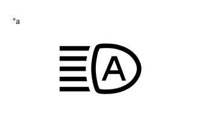

| Last Modified: 12-09-2025 | 6.11:8.1.0 | Doc ID: RM100000002H0M2 |
| Model Year Start: 2024 | Model: Tacoma | Prod Date Range: [12/2023 - ] |
| Title: ADVANCED DRIVER ASSISTANCE SYSTEM: FRONT CAMERA SYSTEM: OPERATION CHECK; 2024 - 2026 MY Tacoma Tacoma HV [12/2023 - ] | ||
OPERATION CHECK
|
*a |
Automatic High Beam Indicator Light on Combination Meter Assembly |
AUTOMATIC HIGH BEAM OPERATION CHECK
(a) When all of the following conditions are met, the automatic high beam becomes standby mode and the automatic high beam indicator light will turn on:
- Turn the ignition switch to ON.
- Turn the light control switch to the AUTO or head position.
- Turn the headlight dimmer switch assembly to the low beam position.
- Turn on the auto high beam switch.
- The low beam headlights are illuminated
NOTICE:
- If the forward recognition camera cannot correctly recognize the view ahead due to bad weather (dense fog, etc.) or if dirt, etc., is obstructing the windshield glass, although a warning message is displayed on the multi-information display, the automatic high beam indicator in the combination meter assembly may not illuminate and the automatic high beam system may not operate.*
- If operation of the forward recognition camera is temporarily suspended due to excessively high temperature, or automatic beam axis calibration is being performed due to an altered vehicle posture caused by loading, etc., the automatic high beam system may not operate even if the automatic high beam indicator in the combination meter assembly is illuminated.
HINT:
*: If it is confirmed that the inside of the windshield glass is dirty, remove the forward recognition camera and hood and clean the inside of the windshield glass using glass cleaner. (Even though the forward recognition camera is removed and installed when cleaning, it is not necessary to perform an axis alignment.)
Click here
![2024 - 2026 MY Tacoma Tacoma HV [12/2023 - ]; ADVANCED DRIVER ASSISTANCE SYSTEM: FRONT CAMERA: REMOVAL](../../../../stylegraphics/info.gif)
(b) When all of the following conditions are met with the automatic high beam is in standby mode, the high beams automatically turn on after a short delay:
- The vehicle speed is more than approximately 34 km/h (21 mph).
- The area in front of the vehicle is dark.
- There are no oncoming vehicles with headlights on.
- There are no preceding vehicles with taillights on.
- There are few streetlights along the street ahead.
NOTICE:
The low beams may not change to high beams due to illumination from city lighting, signals or billboards, or due to reflective surfaces, such as signs or signboards.
(c) When the high beams turned on by the automatic high beam, the automatic high beam turns off the high beams and turns to low beams when any of the following conditions are met:
- The vehicle speed is less than approximately 27 km/h (17 mph).
- The level of ambient light is higher than a specified threshold.
- There are oncoming vehicles with headlights on.
- There are preceding vehicles with taillights on.
- Light from streetlights ahead is higher than a specified threshold.
NOTICE:
-
Under the following conditions, the high beams may change to low beams.
- There is interference from other illumination, such as city lighting, signals or billboards, or reflective surfaces, such as signs or signboards
- There is interference from the fog lights of an oncoming vehicle
-
Under the following conditions, the high beams may not change to low beams.
- Passing an oncoming vehicle on a curve
- Preceding or oncoming vehicle appears and disappears on a continuous curve
- Preceding or oncoming vehicle appears and disappears due to the median, roadside trees or other obstructions
- Another vehicle cuts in front of the vehicle
(d) When any of the following conditions are met, the automatic high beam will be canceled and the indicator light will turn off:
- Turn the ignition switch off.
- The light control switch is turned to any position except the AUTO or head position.
- Turn the headlight dimmer switch assembly to the high beam position.
- The auto high beam switch is turned off.
- The low beam headlights are not illuminated
|
|
|